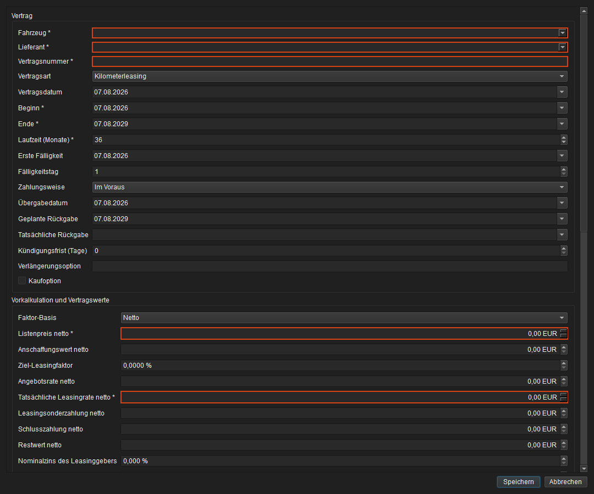
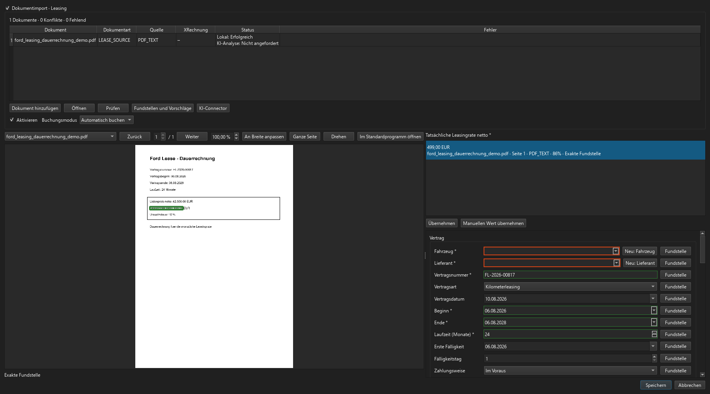
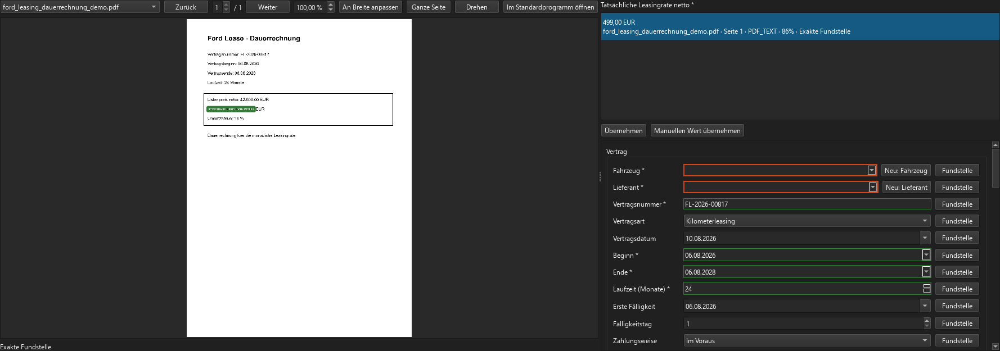

Leasingverträge¶
Die Leasingverwaltung verbindet Vertragskonditionen, Vorkalkulation, Zahlungsplan, Vertragsdokumente, Dauerrechnungen und tatsächliche Kosten aus Fremdrechnungen. Die manuelle Vertragsverwaltung steht in allen Editionen zur Verfügung. Dokumentanalyse, XRechnung, OCR, lokales ML und der optionale KI-Connector folgen den Pro-/Enterprise-Lizenzgrenzen; das Berichts-Dashboard gehört ebenfalls zu Pro und Enterprise.
Übersicht und Vertragsakte¶
Öffnen Sie Fuhrpark → Leasingverträge. Die Übersicht kann nach Vertragsnummer, Fahrzeug, Lieferant und Status gefiltert werden. Neu startet die manuelle Anlage. Aus Dokument beginnt eine vorübergehende dokumentgestützte Erfassung. Ein Doppelklick oder Leasingvertrag öffnen öffnet den Vertrag in einem eigenen Arbeitstab; ein bereits geöffneter Vertrag wird fokussiert statt ein zweites Mal geöffnet.
 Abbildung: Leasingübersicht mit Suche, Statusfilter sowie manueller und dokumentgestützter Anlage.
Abbildung: Leasingübersicht mit Suche, Statusfilter sowie manueller und dokumentgestützter Anlage.
Die Vertragsakte trennt Vertrag, Kalkulation, Zahlungsplan, Dokumente, Fremdrechnungen, Dauerrechnungen, Kosten/Gutschriften und Audit. Fahrzeug, Lieferant, Zeitraum, Rate und Status bleiben dadurch von Ist-Buchungen und archivierten Belegen unterscheidbar.
 Abbildung: Vertragsakte mit anonymisiertem Fahrzeugbezug und M-Daten-Nachweis.
Abbildung: Vertragsakte mit anonymisiertem Fahrzeugbezug und M-Daten-Nachweis.
Aktueller Gesamtworkflow¶
Der hervorgehobene Fundstellentitel bezeichnet das aktuell ausgewählte Feld. Titel, Fundstellenzeilen, Fundstellenqualität und Ladestatus folgen der angemeldeten Benutzersprache auch nach einem Sprachwechsel und nach Abschluss der Dokumentvorschau. Mengen, Zahlen und Daten folgen unabhängig davon der Region. Die aktuelle Auswahl und ausdrücklich übernommene Fundstellen bleiben dabei erhalten. Dokumentzitate bleiben im Originalwortlaut.
Der aktuelle Workflow verwendet für die manuelle und die dokumentgestützte Anlage dasselbe Leasingformular. OCR, XRechnung und KI liefern ausschließlich Vorschläge; Fahrzeug, Lieferant, Vertragswerte, Dauerrechnungsphasen, Aktivierung und Buchungsmodus werden immer in einer gemeinsamen Abschlussprüfung bestätigt. Automatisch buchen bedeutet dabei nicht, dass sämtliche zukünftigen Raten sofort als Kosten entstehen: FLEET Mira bereitet die Monatsvorgänge vor und bucht sie erst am jeweiligen Fälligkeitstag.
flowchart TD
A["Leasingübersicht"] --> B{"Anlageart"}
B -->|"Neu"| C["Gemeinsames Leasingformular manuell ausfüllen"]
B -->|"Aus Dokument"| D["Vertrag, Dauerrechnung, PDF, Bild oder XML hinzufügen"]
D --> E["PDF-Text, OCR und XRechnungsdaten lokal auswerten"]
E --> F{"Pflichtwert fehlt, Konflikt oder geringe Konfidenz?"}
F -->|"Ja und freigegeben"| G["KI-Connector ergänzt prüfbare Vorschläge"]
F -->|"Nein oder keine Cloudfreigabe"| H["Lokale Vorschläge verwenden oder manuell ergänzen"]
G --> I["Dokument links und Formular rechts prüfen"]
H --> I
I --> J["Konkrete Fundstellen übernehmen und Konflikte auflösen"]
J --> C
C --> K["Fahrzeug, Lieferant und Vertragswerte prüfen"]
K --> L{"Dauerrechnung erfassen?"}
L -->|"Nein"| M["Vertrag zur Abschlussprüfung vorbereiten"]
L -->|"Ja"| N["Betragsphasen und Zusatzkomponenten bearbeiten"]
N --> O["Zeiträume, Netto, Steuer, Brutto und Komponenten bestätigen"]
O --> M
M --> P["Gemeinsame Abschlussbestätigung"]
P --> Q{"Leasingvertrag aktivieren?"}
Q -->|"Nein"| R["Vertrag als Entwurf; Dauerrechnung gegebenenfalls PENDING_ACTIVATION"]
Q -->|"Ja"| S["Vertrag aktivieren und Zahlungsplan erzeugen"]
S --> T{"Buchungsmodus der Dauerrechnung"}
T -->|"AUTO – Standard"| U["Monatsvorgänge idempotent vorbereiten"]
T -->|"MANUAL"| V["Fälligen Vorgang als READY_FOR_REVIEW bereitstellen"]
U --> W{"Periode bereits fällig?"}
W -->|"Nein"| X["Nur im Zahlungsplan und unter Dauerrechnungen sichtbar"]
W -->|"Ja"| Y{"Vollständig und konfliktfrei?"}
Y -->|"Ja"| Z["Monatsvorgang automatisch buchen"]
Y -->|"Nein"| AA["REVIEW_REQUIRED mit verständlicher Korrekturaktion"]
V --> AB["Benutzer prüft und bucht"]
Z --> AC["Kosten/Gutschriften, Soll/Ist-Abgleich und FiBu-Export"]
AB --> ACDie wichtigsten Übergänge sind:
- Ohne Aktivierung bleibt der Vertrag ein Entwurf; eine bereits bestätigte Dauerrechnung wartet als
PENDING_ACTIVATION. - Im Modus
AUTOwerden ausschließlich fällige, vollständige und konfliktfreie Perioden gebucht. Zukünftige Perioden bleiben im Zahlungsplan und im Tab Dauerrechnungen sichtbar. READY_FOR_REVIEWverlangt die manuelle Buchung;REVIEW_REQUIREDweist auf einen fachlichen oder technischen Konflikt hin und verhindert eine automatische Teilbuchung.- Erst eine gebuchte Periode erscheint unter Kosten/Gutschriften und fließt in Soll/Ist-Abgleich sowie FiBu-Export ein.
Manuelle Anlage¶
Das vorhandene Leasingformular bleibt die gemeinsame Zielmaske für manuelle und dokumentgestützte Anlagen. Ein Vertrag gehört genau zu einem Fahrzeug und einem Lieferanten. Pflichtfelder sind mit * gekennzeichnet:
- Fahrzeug und Lieferant;
- Vertragsnummer;
- Beginn, Ende und Laufzeit;
- Listenpreis netto;
- tatsächliche Leasingrate netto.
Listenpreis und tatsächliche Rate müssen größer als null sein. Leere Pflichtwerte erhalten einen roten Rahmen und einen lokalisierten Hinweis. Datums-, Zahlen-, Währungs- und Prozentfelder verwenden die Region des angemeldeten Benutzers; intern bleiben ISO-Datum, Cent und Basispunkte maßgeblich.
Mehr- und Minderkilometerpreise werden dagegen als EUR/km mit vier Nachkommastellen erfasst, zum Beispiel 0,1138 EUR/km und 0,0375 EUR/km. Die Speicherung erfolgt präzise in Mikro-Euro, nicht in gerundeten ganzen Cent. OCR und KI unterscheiden die Finance-Sätze von danebenstehenden Service-Sätzen; ausdrücklich lesbare lokale Belegwerte prüfen die Skalierung der KI-Vorschläge. Bestehende, in Cent gespeicherte Preise werden bei der Migration wertgleich übernommen; bereits falsch übernommene Preise müssen anhand des Originals erneut geprüft werden.
Zahlenfelder können mit der Tastatur vollständig geleert werden. Leer ist nicht dasselbe wie 0: erforderliche Angaben bleiben rot markiert und müssen vor dem Speichern ergänzt werden. Der optionale Fälligkeitstag kann leer bleiben, auch nach erneutem Öffnen; die Monatsfälligkeiten ergeben sich weiterhin aus der Ersten Fälligkeit.
Das Mausrad scrollt nur den Vertragsbereich. Das aktive Eingabefeld, die Cursorposition und eine vorhandene Textauswahl bleiben auch beim Hinunter- und Zurückscrollen erhalten. Dies gilt bei manueller Neuanlage, beim Bearbeiten und bei der Anlage aus Dokumenten. Erst ein Klick auf ein anderes Feld oder die Tab-/Umschalt+Tab-Navigation wechselt den Eingabefokus.
Vertrags- und Übergabedatum werden bei einer Neuanlage mit dem Tagesdatum vorbelegt. Der Beginn folgt zunächst dem Vertragsdatum. Aus Beginn und Laufzeit werden Ende und geplante Rückgabe berechnet; die erste Fälligkeit folgt dem Beginn. Widersprüchliche Eingaben werden nicht stillschweigend überschrieben.
Die Fahrzeugauswahl sucht nach KFZ-Nr., Kennzeichen und FIN. Die Lieferantenauswahl durchsucht Lieferantennummer, Name und Kreditorennummer. Erst ein ausdrücklich ausgewählter Treffer wird gespeichert.

Abbildung: Gemeinsames Leasingformular mit Pflichtkennzeichnung, regionalen Eingabefeldern und abhängigen Vertragsdaten.Anlage aus Dokument¶
Aus Dokument akzeptiert Vertrag, Dauerrechnung, PDF, Bild, eigenständige XRechnung-XML und hybride PDF/XRechnung. Mehrere Dokumente können zu einer Anlage gehören, die Anlage erzeugt jedoch genau einen Vertrag für ein Fahrzeug und höchstens eine primäre Dauerrechnung.
flowchart TD
A["Leasingübersicht"] --> B{"Anlageart"}
B -->|"Neu"| C["Manuelles Leasingformular"]
B -->|"Aus Dokument"| D["Vertrag, Dauerrechnung, XML, PDF oder Bild wählen"]
D --> E["Original vorübergehend und unveränderlich archivieren"]
E --> F{"Strukturierte Rechnungsdaten vorhanden?"}
F -->|"Ja"| G["XRechnung extrahieren und validieren"]
F -->|"Nein"| H["PDF-Text oder lokale OCR"]
G --> H
H --> I["Regeln und lokales ML"]
I --> J["Dokumente zusammenführen und Stammdaten abgleichen"]
J --> K{"Fehlend, widersprüchlich oder unsicher?"}
K -->|"Ja"| L["Optionalen KI-Connector je Dokument freigeben"]
K -->|"Nein"| N["Vorschläge in das Leasingformular übernehmen"]
L --> M["Cloudvorschläge mit Quelle und Konfidenz"]
M --> N
N --> O["Geteilte Prüfung: Dokument links, Leasingformular rechts"]
O --> R["Feld- oder Kandidatenfokus zeigt Dokument, Seite und alle Fundstellen"]
R --> S["Blaue Vorschau; Benutzer übernimmt eine konkrete Fundstelle"]
S --> P["Explizite Abschlussbestätigung"]
P --> Q["Vertrag und optionale Stammdaten atomar anlegen"]Die Quellenrangfolge verhindert, dass ein unsicherer Vorschlag bessere Daten stillschweigend verdrängt: valide XRechnungsdaten sind für Rechnungs- und Steuerwerte maßgeblich, danach folgen eingebetteter Text und lokale Regeln, die mitgelieferte PDFium-/Tesseract-OCR und schließlich freigegebene KI-Vorschläge. Jede Übertragung an einen Cloudprovider benötigt eine ausdrückliche Zustimmung für das jeweilige Dokument. Ein fehlender OCR-Bestandteil führt zu einem sichtbaren technischen Fehlerstatus und nicht zu SUCCEEDED mit leerem Ergebnis.
Während einer laufenden Dokumentanalyse bleiben Dokumentliste, Viewer und Abbrechen verfügbar; die Vertragsfelder und Speichern sind gesperrt. Ein fachlicher Analysefehler verhindert die manuelle Ergänzung nicht. Die Dokumentliste zeigt Dokumentart, Quelle, XRechnungsstatus, Analysestatus, Fortschritt und Fehler. In der Statusspalte stehen lokale und KI-Analyse getrennt untereinander. Die zusätzliche Fortschrittsanzeige visualisiert eingeplante Vorgänge, laufende Verarbeitung als bewegten Balken sowie den abschließenden Erfolg oder Fehler je Dokument. Ohne Cloudfreigabe erscheint KI-Analyse: Nicht angefordert; ein laufender oder abgeschlossener Auftrag nennt zusätzlich den Provider. Bei mehreren KI-Läufen ist der neueste Auftrag maßgeblich. Für PDF, XML und hybride Belege steht Prüfen zur XRechnungsvalidierung bereit. Eine nachgelagerte lokale Suche für ältere KI-Ergebnisse läuft getrennt im Hintergrund: Fundstellen: Werden vorbereitet und ein animierter Balken bleiben sichtbar, während Formular und Dokumentnavigation bereits wieder bedienbar sind.

Abbildung: Maximierte responsive Prüfmaske mit Dokumentsteuerung, markierter Fundstelle, Kandidaten und dem unveränderten Leasingformular.Konflikte, fehlende Angaben und Fundstellen¶
Beim Start bleibt die Trefferliste leer und das Dokument wird als ganze Seite angezeigt. Erst ein Klick in ein Formularfeld, die bewusste Tab-Navigation oder Fundstelle aktiviert dessen Vorschläge und Belegmarkierungen. Die hervorgehobene Überschrift über der Trefferliste nennt das aktive Feld. Reines Scrollen, automatische Formularaktualisierungen und wechselnde sichtbare Felder ändern weder die Trefferliste noch die letzte Vorschau.
Maßgeblich ist der tatsächliche Klick oder Tab-/Umschalt+Tab-Tastendruck, nicht ein Fokuswechsel des Formulars. Das Mausrad ändert weder das aktive Eingabefeld noch die Vorschläge oder den Dokumentausschnitt.
Für die Dokumentanlage entfällt das separate Konfliktfenster. Das Anlagefenster öffnet maximiert, prüft nach dem ersten Anzeigen auch die tatsächliche Windows-Bildschirmgeometrie und kann über die normale Fenstersteuerung minimiert und wiederhergestellt werden. Für 1920×1080 ist die Ausgangsteilung ungefähr 55/45; ein zu schmal gespeicherter Formularbereich wird auf eine bedienbare Mindestbreite angehoben. Die kompaktere Dokumentliste beansprucht rund 20 Prozent weniger Höhe. Links steht weiterhin ausreichend Platz für das ausgewählte Original bereit, rechts sind Fundstellen und Vorschläge, Eingabefelder und feldbezogene Aktionen ohne horizontales Abschneiden sichtbar. Die benutzerbezogene Splitterposition wird innerhalb dieser Bediengrenze gespeichert. Dokumentauswahl, Seite, Zoom, Einpassen, Drehung und Öffnen im Standardprogramm bleiben verfügbar.
Das Mausrad scrollt innerhalb des Vertragsbereichs den Formularinhalt. Befindet sich der Mauszeiger über einem Datums-, Ganzzahl-, Dezimal-, Betrags-, Prozent- oder Auswahlfeld, wird dessen Wert dabei nicht verändert; das Scrollen wird an den Vertragsbereich weitergereicht. Numerische Editoren besitzen keine Hoch-/Runter-Schaltflächen; Werte werden direkt über die Tastatur eingegeben. Wird eine Kandidatenauswahl aufgehoben oder der Inhalt per Tastatur gelöscht, bleibt das Zahlenfeld sichtbar und intern leer; erst eine bewusste Eingabe setzt wieder einen Wert.
Ein Klick auf Fundstelle oder einen Kandidateneintrag öffnet automatisch das richtige Dokument, die richtige Seite und die zugehörige Markierung. Jede physische Fundstelle erscheint in einer eigenen, skalierungsfesten Zeile, auch wenn derselbe Wert auf mehreren Seiten oder in mehreren Dokumenten vorkommt. Die Zeile zeigt den regional formatierten Wert sowie darunter Dokumentname, Seite, Analysequelle, Konfidenz und Fundstellenqualität; rechts befindet sich Übernehmen. Die Zeilenhöhe richtet sich nach Schrift- und Anzeigeskalierung, sodass sich mehrere Treffer nicht überlagern. Fokus oder Überfahren markiert die betrachtete Stelle im Dokument blau, ändert aber keinen Formularwert. Übernehmen und das Aktivieren der Kandidaten-Checkbox verwenden denselben Vorgang: Wert und konkrete Fundstellen-ID werden gemeinsam gespeichert, das Häkchen aktiviert und Zeile sowie Dokumentmarkierung grün dargestellt. Das Deaktivieren der aktiven Checkbox entfernt Auswahl und Feldwert vollständig. Ein expliziter Leerzustand verhindert, dass Polling oder eine erneute Analyse den Vorschlag ungefragt wieder einsetzt. Die Auswahl bleibt beim Feldwechsel erhalten und wird beim Zurückkehren samt Dokument, Seite und Fokus wiederhergestellt. Eine direkte Änderung im Formular beziehungsweise Manuellen Wert übernehmen speichert den manuellen Wert und entfernt die zuvor gewählte Fundstelle automatisch.
Ein eindeutiger Vorschlag mit genau einer Fundstelle wird innerhalb der vorübergehenden Erfassung automatisch als AUTO ausgewählt. Seine Checkbox, Kandidatenzeile und Markierung zeigen diesen Zustand unmittelbar an. Bei mehreren physischen Fundstellen oder einem fachlichen Konflikt wird dagegen keine konkrete Fundstelle vorgetäuscht; dort bleibt die ausdrückliche Auswahl erforderlich. Eine durch den Benutzer übernommene Fundstelle wird als USER geführt. Die verbindliche Bestätigung des gesamten Vertrags erfolgt weiterhin erst im Abschlussdialog.
Die Abschlussprüfung berücksichtigt dabei nicht nur gespeicherte Fundstellenauswahlen, sondern auch die tatsächlich sichtbaren und abschließend bestätigten Formularwerte. Die Auswahl eines bestehenden beziehungsweise die vorgemerkte Neuanlage eines Fahrzeugs oder Lieferanten bestätigt zugleich die zugehörigen Stammdatenfelder wie Modell oder Lieferantenanschrift. Dadurch blockieren bereits geprüfte Angaben den Abschluss nicht nochmals. Bleibt außerhalb dieser Prüfflächen ein echter Dokumentkonflikt offen, nennt die Meldung die lokalisierten Formularbezeichnungen – beispielsweise Vertragsdatum oder Modell – und führt zurück zum betreffenden Feld; technische Schemanamen werden nicht angezeigt.
Die Farbe zeigt den Benutzerzustand: die fokussierte Kandidatenvorschau ist blau, die übernommene Fundstelle grün und weitere sichtbare Treffer sind zurückhaltend grau. Die Linienart zeigt davon unabhängig die technische Qualität: exakte Fundstellen sind durchgezogen, lokal über Quelltext oder Wertsuche angenäherte Stellen gestrichelt. Gleichwertige Mehrfachtreffer behalten alle lokal belegbaren Koordinaten; nur tatsächlich nicht lokalisierbare Angaben erhalten keine erfundene Markierung. Nur in einer XRechnung vorhandene Werte zeigen BT-Referenz beziehungsweise XML-Bezug. Abgeleitete Werte nennen ihre Ausgangsfelder und verwenden deren Fundstellen.
Die Rahmen der Eingabefelder besitzen in der Dokumentanlage vier eindeutige Zustände: Rot (#d84315) kennzeichnet einen fehlenden Pflichtwert, Orange (#ef6c00) einen vorhandenen Pflichtvorschlag mit noch offenen Mehrfachtreffern, Grün (#2e7d32) einen automatisch eindeutig ausgewählten, ausdrücklich übernommenen oder manuell eingegebenen Pflichtwert und Blau (#1976d2) einen ausgefüllten optionalen Wert aus Dokumentanalyse oder manueller Eingabe. Ein gültiger Nullwert wie 0 % Umsatzsteuer bleibt dabei von einem tatsächlich leeren Editor unterscheidbar.
Technisch verwenden Viewer, Kandidaten und Feldbindung den fachlich neutralen DocumentReviewWorkspace. Fundstellen folgen dem rückwärtskompatibel erweiterten document-evidence-anchor-v1: Dokument-ID und SHA-256, stabile Fundstellen-ID, einbasierte Seite, normalisierte Top-Left-Rechtecke, Quelltext, optionale BT-/XML-Referenz, Methode, Qualität, Konfidenz und Modellversion. Die konkrete temporäre Auswahl liegt je Feld backendneutral mit Ursprung AUTO oder USER in selection_json. Ein explizit geleertes Feld erhält in resolution_json einen Null-Tombstone. Abbruch oder erfolgreiche Finalisierung entfernen diese Sitzungszustände, nachdem bestätigte Trainings-/Audit-Evidenz übernommen wurde. Dadurch kann derselbe Prüfbereich später ohne Leasingabhängigkeit für Fremdrechnungen und Verkehrsverstöße eingesetzt werden.
flowchart LR
A["Feld oder Kandidat fokussieren"] --> B["Dokument und Seite automatisch wählen"]
B --> C{"Lokalisierbare Fundstellen?"}
C -->|"Eine oder mehrere"| D["Je physischer Stelle eine Kandidatenzeile"]
C -->|"Nein"| G["Quelle sichtbar; keine erfundene Markierung"]
D --> E["Fokus: blaue Vorschau"]
E --> H{"Ausdrückliche Benutzeraktion"}
G --> H
H -->|"Übernehmen oder Checkbox aktivieren"| I["Wert und Fundstellen-ID speichern; grün + Häkchen"]
I --> L{"Checkbox bleibt aktiv?"}
L -->|"Nein"| N["Auswahl und Feld leeren; Null-Tombstone speichern"]
L -->|"Ja"| F
H -->|"Manuellen Wert übernehmen"| M["Wert speichern; Fundstellenauswahl entfernen"]
N --> F{"Abschluss"}
M --> F
F -->|"Bestätigen"| K["Finalisieren"]
F -->|"Abbrechen und verwerfen"| J["Temporäre Anlage und Dokumente löschen"]
Abbildung: Zweizeiliger Kandidat mit Dokument- und Seitenbezug; die Vorschau markiert die zugehörige Position, ohne den Formularwert vor der ausdrücklichen Übernahme zu ändern.Fahrzeug und Lieferant werden ausschließlich im Hauptformular gewählt. Gibt es keinen eindeutigen Treffer, stehen direkt neben den Dropdownlisten Neu: Fahrzeug und Neu: Lieferant bereit. Diese Stammdaten werden zunächst nur vorgemerkt und in der Abschlussübersicht mit Nummer und Bezeichnung zur Prüfung angezeigt; dort gibt es keine erneute Stammdatenanlage. Erst die gemeinsame Abschlussbestätigung legt sie an. FIN, Kennzeichen, Lieferantenkennungen und interne Nummern werden unmittelbar vor dem Speichern erneut auf Dubletten geprüft.
Die Dokumentanlage ist eine modale, vorübergehende Sitzung und kein fortsetzbarer Entwurf. Abbrechen, Fensterschließen oder der Abbruch der Abschlussbestätigung führen nach Rückfrage über denselben Verwerfungsweg. Danach bleiben weder Aufnahme noch Dokumente, Analysen, Fundstellen oder Nummernreservierungen sichtbar bestehen. Nicht finalisierte verwaiste Sitzungen werden ebenfalls automatisch bereinigt.
Dauerrechnung und Buchungsmodus¶
Vertrag zuerst, Dauerrechnung später¶
Der Leasingvertrag und die Dauerrechnung müssen nicht in einem gemeinsamen Erfassungsvorgang vorliegen. Ein Vertrag kann zunächst manuell oder über Aus Dokument angelegt werden. Wird er dabei als Entwurf gespeichert, muss er vor der späteren Zuordnung in der Vertragsakte über Aktivieren aktiviert werden.
Liegt noch keine Dauerrechnung vor und enthält das Vertragsdokument keine ausdrückliche erste Fälligkeit, verwendet FLEET Mira den erkannten Vertragsbeginn zugleich als Erste Fälligkeit und leitet daraus den Fälligkeitstag ab. Damit kann auch ein bereits in der Vergangenheit begonnener Vertrag gespeichert werden, ohne dass das beim Öffnen der Maske vorübergehend verwendete Tagesdatum Monatsraten außerhalb der Vertragslaufzeit erzeugt. Eine aus dem Dokument erkannte oder vom Benutzer geänderte erste Fälligkeit hat immer Vorrang. Der Abschnitt Dauerrechnung bleibt in diesem Fall deaktiviert; erkannte Rechnungs- oder Phasenvorschläge werden nicht mit dem Vertrag gespeichert.
Für die später eingehende Dauerrechnung gibt es zwei gleichwertige Wege. Öffnen Sie den aktiven Leasingvertrag und wählen Sie Dauerrechnung aus Dokument, wenn Fahrzeug, Lieferant und Vertrag bereits feststehen. PDF, Bild, XML oder Hybrid-PDF öffnen dann dieselbe geteilte Dokumentprüfung wie die Vertragsanlage. Die Stammdaten sind fixiert; Betragsphasen, Zusatzkomponenten, Steuer und Buchungsmodus bleiben prüf- und bearbeitbar. Geprüft übernehmen legt Fremdrechnung und Vertragszuordnung atomar an.
Alternativ wählen Sie unter Fremdrechnungen → Aus Dokument die Rechnungsart Dauerrechnung. Dieser Weg eignet sich, wenn die Vertragszuordnung noch offen ist. Ein erkannter aktiver Vertrag wird nur vorgeschlagen und ausdrücklich bestätigt; ohne Zuordnung kann die Dauerrechnung als Fremdrechnung gespeichert und später über Dauerrechnung zuordnen verbunden werden. XRechnung importieren verwendet dieselbe Prüfmaske mit vorausgewählter Strukturvalidierung.
Automatisch buchen ist nur mit einem lokal verifizierten Originalbeleg und konfliktfreien Phasen zulässig; andernfalls verwenden Sie Manuell prüfen. Die Zuordnung bereitet Monatsvorgänge vor, bucht aber nur bereits fällige und konfliktfreie Perioden.
flowchart TD
A["Leasingvertrag manuell oder aus Dokument anlegen"] --> A1{"Erste Fälligkeit ausdrücklich vorhanden?"}
A1 -->|"Nein"| A2["Vertragsbeginn als erste Fälligkeit verwenden"]
A1 -->|"Ja"| A3["Erkannte oder manuelle Fälligkeit übernehmen"]
A2 --> B{"Vertrag aktiv?"}
A3 --> B
B -->|"Nein"| C["Vertrag prüfen und aktivieren"]
B -->|"Ja"| D{"Dauerrechnung erfassen"}
C --> D
D -->|"Direkt im aktiven Vertrag"| E["Dauerrechnung aus Dokument"]
D -->|"Zuordnung noch offen"| F["Fremdrechnungen → Aus Dokument"]
E --> G["PDF, Bild, XML oder Hybrid-PDF analysieren"]
F --> G
G --> H["Original links, Felder und Phasen rechts prüfen"]
H --> I{"Vertrag direkt vorgegeben?"}
I -->|"Ja"| J["Geprüfte Fremdrechnung und Zuordnung atomar speichern"]
I -->|"Nein"| K["Dauerrechnung speichern und Vertragsvorschlag bestätigen oder offenlassen"]
K --> L{"Lieferant, Zeitraum, Phasen und Komponenten gültig?"}
J --> L
L -->|"Nein"| M["Zurück zur Prüfung und korrigieren"]
M --> H
L -->|"Ja"| N{"Buchungsmodus"}
N -->|"AUTO mit verifiziertem Original"| O["Monatsvorgänge vorbereiten und fällige Perioden automatisch buchen"]
N -->|"MANUAL"| P["Fällige Perioden zur Prüfung bereitstellen"]Sind Vertrag und Dauerrechnung bereits gemeinsam vorhanden, kann weiterhin die kombinierte dokumentgestützte Anlage verwendet werden. Der hier beschriebene Ablauf ist für Belege gedacht, die erst nach dem Vertragsabschluss eingehen.
Mehrphasige Betragszeiträume¶
Manuelle und dokumentgestützte Anlagen verwenden denselben Editor für Dauerrechnungen. Aktivieren Sie im Leasingformular den optionalen Abschnitt Dauerrechnung und erfassen Sie Belegnummer, Belegdatum, Gültigkeit, Buchungsmodus und – falls vorhanden – das Originaldokument. Ohne verifiziertes Original steht ausschließlich Manuell prüfen zur Verfügung; nach einer späteren Dokumentprüfung kann AUTO für zukünftige, noch nicht gebuchte Perioden freigeschaltet werden.
Eine Dauerrechnung kann beliebig viele Betragszeiträume enthalten. Für jeden Zeitraum werden Typ, Gültig-von/-bis, einmalige oder monatliche Wiederholung und die Kennzeichnung Reguläre Standardphase gepflegt. Die Betragszeilen unterscheiden Leasingrate, Service, Versicherung, Wartung und sonstige Bestandteile. Der Benutzer gibt Netto und Umsatzsteuersatz ein; Umsatzsteuer und Brutto werden centgenau berechnet und sind nicht editierbar. Zusätzliche Bestandteile müssen einer Vertragskomponente zugeordnet sein.
Erkennt die Dokumentanalyse eine wiederkehrende Zusatzleistung wie Technik-Service, legt FLEET Mira dafür einen Vorschlag in Zusatzkomponenten an und verknüpft die zugehörigen Betragszeilen aller Phasen mit derselben temporären Komponente. Weichen erste Teilperiode und Regelphase voneinander ab, verwendet die Komponententabelle den Betrag der regulären Monatsphase; der abweichende Teilperiodenbetrag bleibt an seiner Rechnungsphase erhalten. Die Vorschläge sind vor dem Abschluss vollständig bearbeitbar.
Die Spalte Zeitraum verwendet das Datumsformat der Region des angemeldeten Benutzers. Netto, Umsatzsteuer und Brutto sind rechtsbündig ausgerichtet; der Nettobetrag ist zur schnellen Orientierung weiß und fett auf blauem Hintergrund hervorgehoben. In der dokumentgestützten Anlage zeigt die Auswahl einer Phasenzeile links im Originalbeleg die lokal belegbare Zeitraumfundstelle sowie die zugehörigen Betragszeilen. Alle sichtbaren Fundstellen dieser Dauerrechnungsphase werden gemeinsam mit blauem Rahmen und blauem Hintergrund hervorgehoben. Nach Dokument-, Seiten- oder Zoomwechsel zentriert der Viewer die aktuell fokussierte Fundstelle automatisch im sichtbaren Ausschnitt. Fehlen belastbare Seitenkoordinaten, erfindet FLEET Mira keine Markierung; die Phase bleibt vollständig manuell prüfbar.
Typischerweise wird eine verkürzte erste Abrechnungsperiode als Erste Teilperiode mit ONCE und die anschließende Monatsrate als Reguläre Phase mit MONTHLY erfasst. Aus vorheriger Phase übernehmen kopiert eine Phase, damit nur Zeitraum, Wiederholung und abweichende Beträge angepasst werden müssen. Die reguläre Standardphase bestimmt die tatsächliche Leasingrate im Vertragskopf; erste oder letzte Teilperioden bleiben periodenspezifische Überschreibungen.
| Phase | Zeitraum | Betragszeile | Netto |
|---|---|---|---|
| Erste Teilperiode | 20.08.2024–31.08.2024 | Leasingrate | 107,80 EUR |
| Erste Teilperiode | 20.08.2024–31.08.2024 | Technik-Service | 6,44 EUR |
| Reguläre Phase | 01.09.2024–19.08.2026 | Leasingrate monatlich | 294,00 EUR |
| Reguläre Phase | 01.09.2024–19.08.2026 | Technik-Service monatlich | 17,56 EUR |
flowchart TD
A["Leasingvertrag anlegen"] --> B{"Manuell oder aus Dokument?"}
B -->|"Manuell"| C["Dauerrechnung und Betragsphasen erfassen"]
B -->|"Aus Dokument"| D["PDF-Text oder OCR mit Fundstellen"]
D --> E["Gemini 2.5 Flash strukturiert Phasen und Betragszeilen"]
E --> F{"Vollständig und widerspruchsfrei?"}
F -->|"Nein"| G["Optionaler Prüflauf mit Gemini 2.5 Pro"]
F -->|"Ja"| H["Gemeinsamen Phaseneditor vorbelegen"]
G --> H
C --> I["Zeiträume, Steuer, Komponenten und Summen prüfen"]
H --> I
I --> J["Benutzer bestätigt alle Phasen"]
J --> K["Periodengerechten Zahlungsplan erzeugen"]
K --> L["AUTO nur für konfliktfreie Vorgänge mit verifiziertem Original"]Bei der Dokumentanalyse sucht die lokale Erkennung unter anderem nach 1. Leasingrate, Folgemonate, monatlich, ab, bis und bis zum Laufzeitende sowie nach Leasing- und Servicezeilen. Google Gemini liefert die Phasen als strukturierte Liste mit Seite und kurzem Belegtext. Standard ist Gemini 2.5 Flash. Fehlende, überlappende, rechnerisch widersprüchliche oder lokal nicht belegbare Phasen können – nach derselben Dokumentfreigabe – mit dem im KI-Connector konfigurierten Prüfmodell, standardmäßig Gemini 2.5 Pro, gegengeprüft werden. Beide Modelle liefern ausschließlich Vorschläge in den gemeinsamen Editor.
Vor der Bestätigung verlangt FLEET Mira eine lückenlose und überschneidungsfreie Abdeckung der Dauerrechnung, genau eine reguläre monatliche Standardphase, centgenaue Netto-/Steuer-/Bruttowerte und vollständige Komponentenzuordnungen. Eine bestätigte Teilperiode ist keine Abweichung. Echte Differenzen über einem Cent werden mit Zeitraum, verständlicher Betragszeile, erwartetem und erfasstem Wert erklärt und bleiben bis zur Korrektur oder begründeten manuellen Prüfung von AUTO ausgeschlossen. Änderungen versionieren nur noch ungebuchte Zahlungsplanposten; gebuchte Perioden bleiben unverändert.
Sobald Betragsphasen vorhanden sind, bestimmt ihr frühester Beginn die erste Fälligkeit des Vertrags. FLEET Mira erzeugt nur Monatsraten, die vollständig innerhalb der Vertragslaufzeit liegen. Eine Kombination aus erster Fälligkeit, Laufzeit und Vertragsende, die Raten außerhalb dieses Zeitraums erzeugen würde, wird bereits beim Speichern mit einem verständlichen Hinweis abgewiesen. Dadurch kann ein historischer Vertragsbeginn nicht versehentlich durch das aktuelle Tagesdatum als erste Fälligkeit ersetzt werden.
Erkennt und bestätigt der Benutzer eine Dauerrechnung, sind Leasingvertrag aktivieren und Automatisch buchen vorbelegt. Der Buchungsmodus kann vor dem Abschluss auf Manuell prüfen geändert werden. Die Abschlussübersicht bietet Leasingvertrag aktivieren nochmals als änderbare Option an und aktualisiert den angezeigten Status unmittelbar. Zurück führt ohne Verwerfen in das Erfassungsformular; die Abschlussübersicht fordert weiterhin die ausdrückliche Bestätigung der geprüften Werte und der automatischen Buchung.
flowchart TD
A["Bestätigte Dauerrechnung"] --> B["Vertrag, Fremdrechnung und Steuerdaten verknüpfen"]
B --> C{"Vertrag aktivieren?"}
C -->|"Nein"| D["Dauerrechnung: PENDING_ACTIVATION"]
C -->|"Ja"| E{"Buchungsmodus"}
E -->|"AUTO – Standard"| F["Monatliche Soll-Vorgänge idempotent vorbereiten"]
E -->|"MANUAL"| G["Fälligen Vorgang zur Prüfung bereitstellen"]
F --> H{"Fällig, vollständig und konfliktfrei?"}
H -->|"Ja"| I["Monatsvorgang automatisch buchen"]
H -->|"Nein"| J["REVIEW_REQUIRED"]
G --> K["Benutzer prüft und bucht"]
I --> L["Leasing-Soll/Ist-Abgleich und FiBu-Export"]
K --> LDie Dauerrechnung bildet den wiederkehrenden Abrechnungszeitraum ab, nicht die Summe der gesamten Laufzeit. Im Modus AUTO bucht der Worker jeden fälligen oder überfälligen, vollständigen und konfliktfreien Monatsvorgang genau einmal. Zukünftige Monatskosten werden bewusst noch nicht unter Kosten/Gutschriften gebucht; sie bleiben bis zum Fälligkeitstag im Zahlungsplan und in den Dauerrechnungsvorgängen sichtbar. Nach der Zuordnung einer Dauerrechnung wird die Verarbeitung unmittelbar angestoßen. Die Vertragsakte aktualisiert Buchungszähler, Vorgänge und Kosten/Gutschriften während sie geöffnet ist automatisch, sodass ein fälliger Eintrag ohne erneutes Öffnen erscheint. Unstimmigkeiten stoppen die Automatik für die betroffene Periode und führen zu REVIEW_REQUIRED; es gibt keine Teil- oder Ersatzbuchung. Bankabbuchung und Zahlungsbestätigung bleiben außerhalb von FLEET Mira.
Beim Bearbeiten eines Vertrags wird eine bereits zugeordnete Dauerrechnung einschließlich ihrer bestätigten Betragsphasen wieder angezeigt. Diese Angaben sind dort schreibgeschützt, weil gebuchte und versionierte Rechnungsphasen nicht zusammen mit allgemeinen Vertragsfeldern stillschweigend geändert werden dürfen. Buchungsmodus, Monatsvorgänge und spätere Zuordnungen werden über den Tab Dauerrechnungen und dessen fachliche Aktionen verwaltet.
Wird die Aktivierung abgewählt, speichert FLEET Mira den Vertrag als Entwurf und die verifizierte Dauerrechnung als PENDING_ACTIVATION. Bei einer späteren Aktivierung muss die Zuordnung erneut bestätigt werden.
Leasingfaktor und tatsächliche Rate¶
Die Vorkalkulation entspricht der im Fahrzeugleasing üblichen Vergleichsrechnung und ist keine Darlehensannuität:
Monatsrate = Listenpreis × Leasingfaktor / 100
Leasingfaktor = Monatsrate / Listenpreis × 100
Die Faktorgrundlage ist netto oder brutto. Bei eingegebenem Ziel-Leasingfaktor berechnet FLEET Mira die Planrate. Bleibt er leer, wird er aus der Angebotsrate, ersatzweise aus der tatsächlichen Vertragsrate, berechnet. Die tatsächliche Vertragsrate bleibt separat editierbar und ist für Zahlungsplan und Vertragskosten maßgeblich.
Der Ist-Faktor vergleicht die tatsächliche Rate mit dem Listenpreis. Der effektive Faktor verteilt Sonderzahlung, Schlusszahlung und obligatorische faktorrelevante Einmalkosten auf die Laufzeit. Die All-in-Rate ergänzt monatliche Servicekomponenten und sonstige Einmalkosten. Differenz zur Vorkalkulation ist die tatsächliche Netto-Vertragsrate abzüglich der Planrate; reine Cent-Rundungen werden ausgeblendet.
 Abbildung: Vorkalkulation, tatsächliche Vertragsrate, Faktoren und Vollkosten des anonymisierten Mustervertrags.
Abbildung: Vorkalkulation, tatsächliche Vertragsrate, Faktoren und Vollkosten des anonymisierten Mustervertrags.
Dokumente, Rechnungen, Korrekturen und Fahrleistung¶
Dokumente verknüpft Vertrags-PDFs aus dem Dokumentenarchiv des Fahrzeugs. Fremdrechnungen, Dauerrechnungen und Kosten/Gutschriften zeigen die auf Positionsebene verknüpften tatsächlichen Buchungen; geplante Zahlungen bleiben davon getrennt im Zahlungsplan. Eine Sammelrechnung kann positionsweise mehreren Fahrzeugen und Verträgen zugeordnet werden.
Eine falsche Zuordnung wird vor der Buchung direkt korrigiert. Nach der Buchung erfolgt eine versionierte Umbuchung mit Gegenbuchung am falschen und neuer Buchung am richtigen Fahrzeug. Nach einem FiBu-Export wird die Korrektur als eigener RECLASSIFICATION-Export bereitgestellt. Ändert sich nur die Vertrags- oder Zahlungsplanzuordnung beim richtigen Fahrzeug, wird ausschließlich die Leasingabstimmung versioniert.
Die Gesamtkilometer werden als editierbarer Vorschlag aus Kilometer pro Jahr × Laufzeit in Monaten / 12 berechnet und kaufmännisch gerundet. Ein vorhandener Vertragswert bleibt beim Öffnen erhalten; nach einer Änderung von Jahresfahrleistung oder Laufzeit kann der Vorschlag weiterhin überschrieben werden.
Berichte¶
Die Gruppe Leasing im Berichts-Dashboard bietet:
- aktive Leasingverträge zum Stichtag nach Fahrzeug;
- aktive, im gewählten Zeitraum endende Verträge;
- aktive Leasingverträge zum Stichtag nach Lieferant.
Alle drei Berichte beginnen mit KFZ-Nr., Kennzeichen und FIN und zeigen Vertragsrate, Ziel-, Ist- und Effektivfaktor, All-in-Rate sowie Vertragsgesamtkosten.